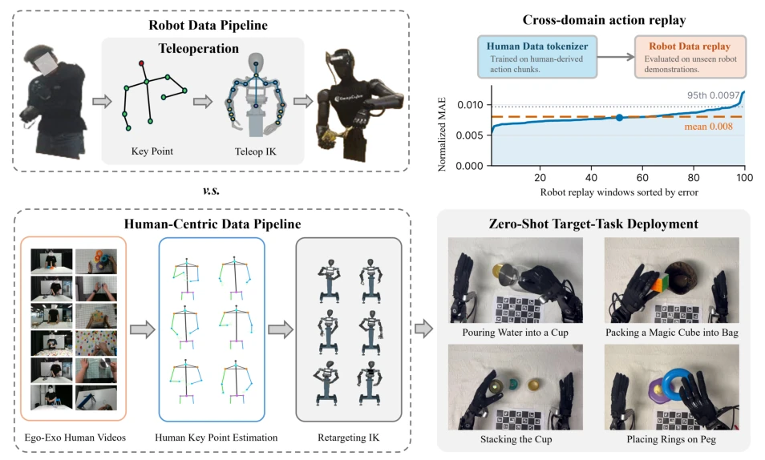
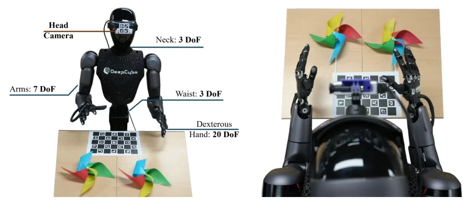
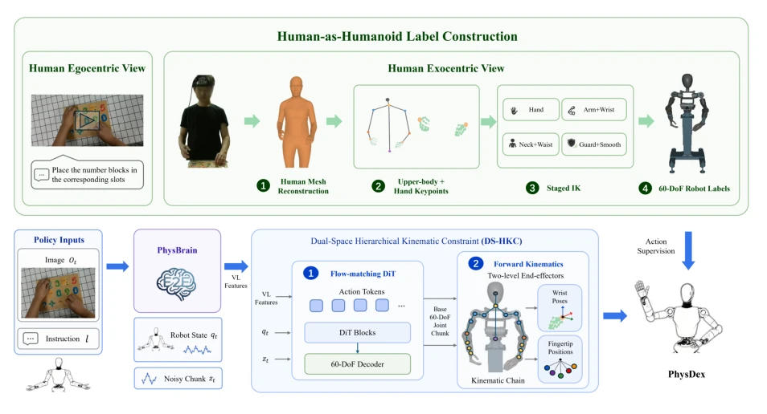
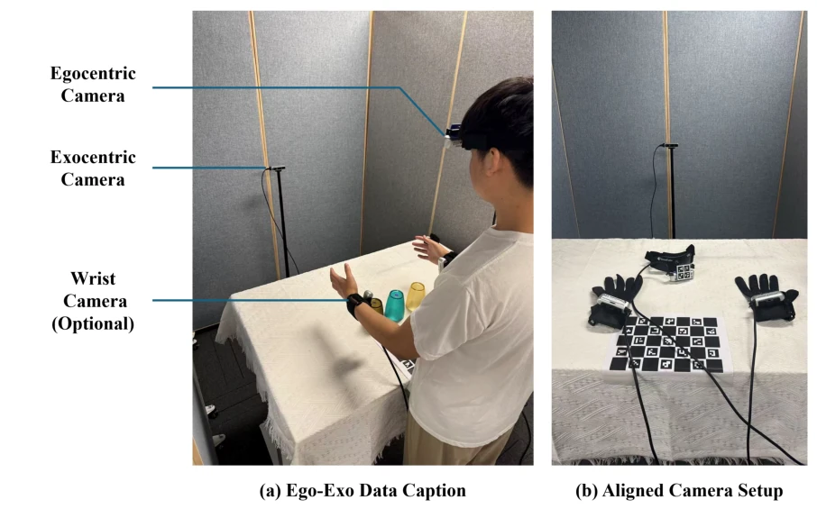
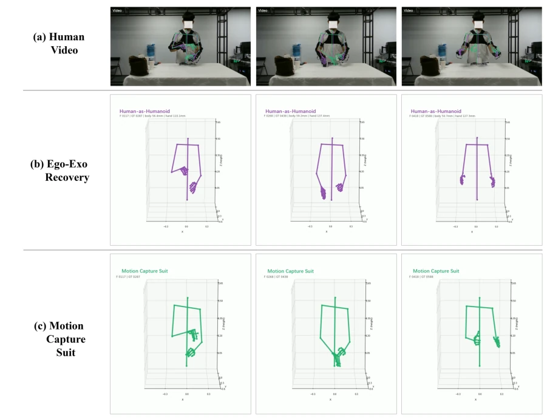
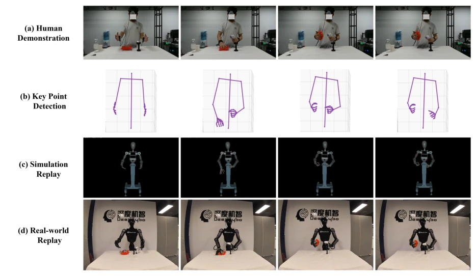
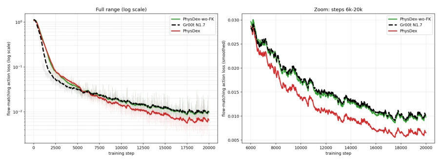
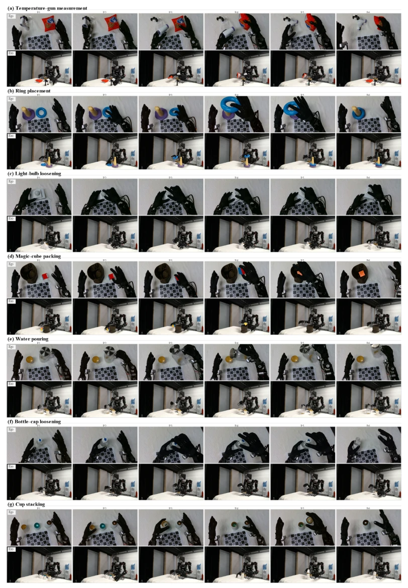
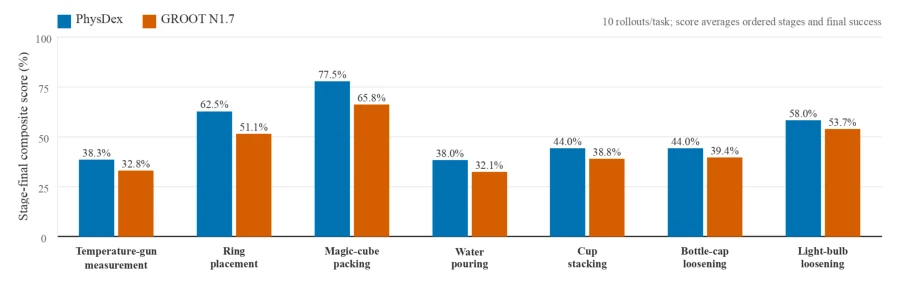

这篇论文试图用人类视频“喂”给人形机器人，核心在于“对齐”。他们搞了个 PrimeU 机器人，长得像人，然后从 Ego-Exo 视频里抠动作，通过逆运动学转成 60 自由度指令。虽然号称 Zero-Shot，其实还是得靠大量人类演示数据预训练。FK-aware 训练是个亮点，防止关节乱动。但“零样本”有点营销嫌疑，毕竟没真机器人演示。数据吞吐量提升明显，但接触任务仍需真机微调。整体是条可行的数据捷径，但依赖特定硬件 PrimeU，泛化性存疑。这种“人类即人形”的思路很聪明，但把人类动作强行映射到机器人关节，难免有失真。不过他们通过分阶段 IK 和 FK 约束，尽量保留了任务空间几何，这点值得肯定。对于高自由度人形来说，这比纯端到端模仿更靠谱。
This paper attempts to "feed" human videos to humanoid robots, with the core lying in "alignment". They developed a PrimeU robot, resembling a human, then extracted actions from Ego-Exo videos and converted them into 60-degree-of-freedom (DoF) commands via inverse kinematics. Although claimed as Zero-Shot, it actually relies on pre-training with a large amount of human demonstration data. FK-aware training is a highlight, preventing erratic joint movements. However, the "zero-shot" claim carries some marketing suspicion, given the lack of real robot demonstrations. Data throughput improvement is significant, but contact tasks still require real robot fine-tuning. Overall, it is a feasible data shortcut, but relies on specific hardware (PrimeU), raising questions about generalization. This "Human is Humanoid" approach is clever, but forcibly mapping human actions to robot joints inevitably introduces distortion. However, they preserved task-space geometry as much as possible through staged IK and FK constraints, which is commendable. For high-DoF humanoids, this is more reliable than pure end-to-end imitation.
研究动机Motivation
机器人 VLA 训练缺数据。Teleoperation 太慢 (Brohan et al., 2022)。人类视频多但不可执行。现有方法如 H-RDT (Bi et al., 2025) 或 EgoVLA (Yang et al., 2025) 要么依赖虚拟手柄，要么只学语义。需要直接可执行的关节空间标签。现有工作如 Humanplus (Fu et al., 2024a) 依赖动捕服，成本高。本文旨在解决高自由度人形机器人的数据效率问题，将人类视频转化为可执行监督信号。高自由度人形机器人的动作空间复杂，传统遥操作难以规模化。人类演示虽丰富，但存在形态差异和感知视角鸿沟。如何低成本获取高质量、可执行的机器人动作标签，是制约 VLA 模型落地的关键瓶颈。
Robot VLA training lacks data. Teleoperation is too slow (Brohan et al., 2022). Human videos are abundant but not executable. Existing methods such as H-RDT (Bi et al., 2025) or EgoVLA (Yang et al., 2025) either rely on virtual controllers or only learn semantics. Directly executable joint-space labels are required. Existing work such as Humanplus (Fu et al., 2024a) relies on motion capture suits, incurring high costs. This paper aims to address the data efficiency problem of high-DoF humanoid robots by converting human videos into executable supervision signals. The action space of high-DoF humanoid robots is complex, making traditional teleoperation difficult to scale. Although human demonstrations are abundant, there are morphological differences and perceptual perspective gaps. How to acquire high-quality, executable robot action labels at low cost is a key bottleneck constraining the deployment of VLA models.

Figure 1 Overview of Human-as-Humanoid and its effect on humanoid action-data generation. Conventional robot data collection obtains executable actions through teleoperation, coupling data throughput to robot execution. Human- as-Humanoid instead uses synchronized ego-exo human videos, estimates human keypoints, and retargets them into executable 60-DoF humanoid actions near the video capture rate. The upper-right panel reports a cross-domain action-replay compatibility check, where an action tokenizer trained on human-derived action chunks reconstructs unseen robot trajectories. The lower-right panel shows zero-shot real-robot policy rollouts from a VLA fine-tuned on converted human demonstrations, not direct replay of generated trajectories, on water pouring, bag packing, cap twisting, a
方法Method
流程：1. PrimeU 设计（肩宽、臂长对齐人类）。2. Ego-Exo 视频恢复人体骨架（比动捕服稳）。3. 分阶段 IK 重定向（手->臂->颈腰）。4. PhysDex 训练，用 DS-HKC 约束，同时监督关节和末端几何。具体地，Staged IK 解决耦合问题，先手后臂。DS-HKC 利用可微 FK 监督腕部和指尖几何，弥补关节空间损失的几何信息。动作空间统一为 60-DoF 向量，兼容控制器。数据流上，头显摄像头提供策略观测，外置摄像头辅助恢复。IK 求解器分步优化，避免单步 60 自由度求解的数值不稳定。训练时引入流匹配 DiT 作为动作骨干，结合 FK 损失确保末端执行器精度。这种设计兼顾了可执行性和任务几何约束。
Workflow: 1. PrimeU design (shoulder width, arm length aligned with humans). 2. Ego-Exo video human skeleton recovery (more stable than motion capture suits). 3. Staged IK remapping (hand->arm->neck/waist). 4. PhysDex training, using DS-HKC constraints, supervising both joints and end-effector geometry simultaneously. Specifically, Staged IK solves coupling problems, prioritizing hands then arms. DS-HKC utilizes differentiable FK to supervise wrist and fingertip geometry, compensating for geometric information lost in joint space. Action space is unified as a 60-DoF vector, compatible with controllers. In terms of data flow, headset cameras provide policy observations, while external cameras assist recovery. The IK solver optimizes step-by-step, avoiding numerical instability associated with single-step 60-DoF solving. During training, Flow Matching DiT is introduced as the action backbone, combined with FK loss to ensure end-effector accuracy. This design balances executability and task geometric constraints.

Figure 2 PrimeU human-aligned humanoid embodiment. The upper body is developed in-house and is designed around adult-male manipulation scale, with two 7-DoF arms, a 3-DoF neck, and a 3-DoF waist. The platform uses two 20-DoF Wuji dexterous hands for fine manipulation. Head-view and wrist-view cameras are Intel RealSense D435 cameras, matching the viewpoint structure used by the deployed VLA policy.

Figure 3 Overview of the PhysDex learning pipeline. (Top) Synchronized human ego-exo videos are converted into controller-aligned 60-DoF robot action labels: egocentric views provide deployment-aligned policy observations, exocentric views support human mesh and upper-body/hand keypoint recovery, and staged IK maps the recovered motion into PrimeU joint chunks. (Bottom) The VLA policy is trained in the same robot action space. Visual-language features, the current robot state, and a noisy action chunk condition a flow-matching DiT, while DS-HKC applies differentiable FK supervision to the predicted joint chunk through wrist poses and fingertip positions.

Figure 4 Ego-exo data-collection setup. The egocentric cameras provide policy-aligned observations, while synchronized exocentric cameras provide complementary visual evidence for upper-body and hand motion recovery.
实验Experiments
7 个任务，对比 GR00T N1.7 (Bjorck et al., 2025)。数据吞吐量提升 4.8-7.2 倍。Tokenizer 重建误差低，证明动作空间兼容。零样本任务表现好，接触任务需少量真机微调。阶段完成率指标更细。FK 监督降低 Loss。证明人类数据可替代部分真机数据。在 Ring Placement 等任务上，仅用人类数据即可部署。动作重建的归一化 MAE 低至 0.008，说明转换后的标签分布与真实机器人动作高度一致。相比基线，PhysDex 在接触类任务上表现更稳健，验证了 FK 约束的有效性。
7 tasks, compared with GR00T N1.7 (Bjorck et al., 2025). Data throughput increased by 4.8-7.2 times. Tokenizer reconstruction error is low, demonstrating action space compatibility. Zero-shot task performance is good, while contact tasks require a small amount of real robot fine-tuning. Stage completion rate metrics are more granular. FK supervision reduces Loss. This proves human data can replace some real robot data. On tasks such as Ring Placement, deployment is feasible using only human data. The normalized MAE of action reconstruction is as low as 0.008, indicating the distribution of converted labels is highly consistent with real robot actions. Compared to baselines, PhysDex performs more robustly on contact tasks, validating the effectiveness of FK constraints.

Figure 5 Projection-based comparison between human video, camera-only ego-exo motion recovery, and wearable motion capture at matched relative timestamps. The visualization evaluates observation–motion compatibility by showing how the recovered skeletons align with the visible human body before retargeting into robot action labels.

Figure 6 End-to-end ego-exo conversion and replay at matched timestamps. Rows show the source human video, recovered skeleton keypoints, simulator replay, and real-robot replay. The visualization evaluates whether the recovered human motion remains coherent after retargeting into PrimeU actions and whether the resulting commands preserve the temporal structure required for near-real-time teleoperation-style replay.

Figure 7 Training-loss comparison for high-DoF VLA action learning. FK-aware supervision reduces the loss by constraining the joint prediction through robot kinematics, and the PhysBrain-initialized FK-aware model reaches the lowest loss under the same training budget.

Figure 8 Synchronized rollout frames for downstream manipulation tasks. Each panel corresponds to one task; within each panel, the upper row shows the egocentric policy observation and the lower row shows a third-person visualization view at matched phases from early to late execution.

Figure 9 Stage-final composite score in real-robot deployment. The score aggregates ordered stage completion and final task success over 10 rollouts per task, providing a progress-aware measure of deployment performance rather than a binary final-success rate alone.